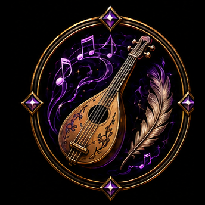
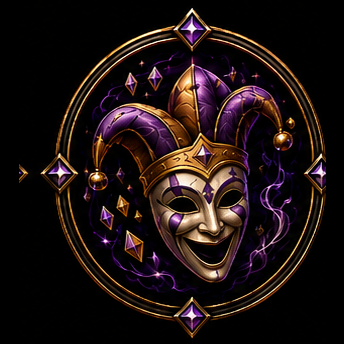
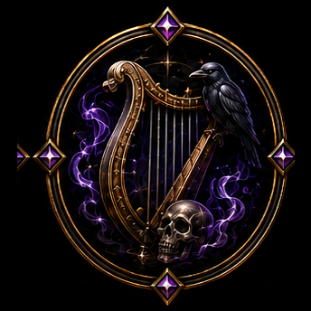
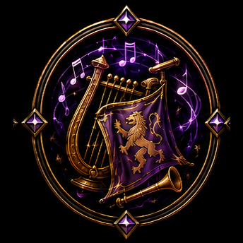
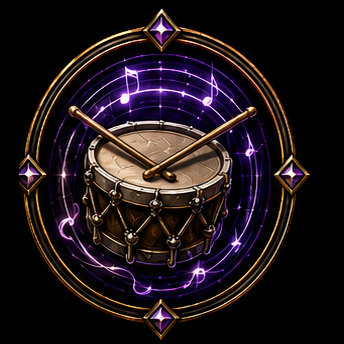
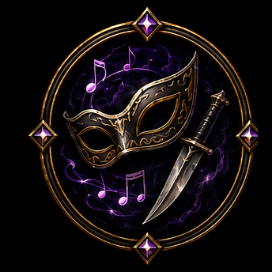
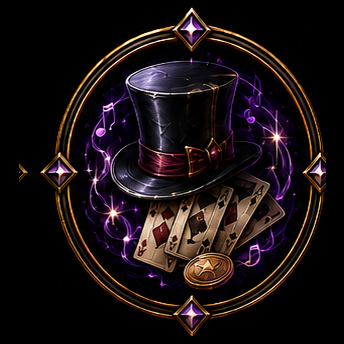
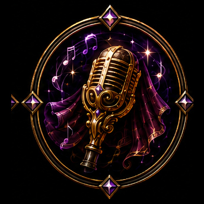
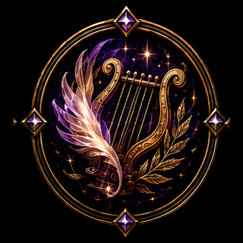
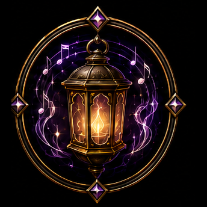

Bard Subclass Icons — assigned
Cut from source art and installed at icons/bard/ — live in the Character Codex.

Minstrellute & feather quill

Jesterfool's mask & cap

Dirge Singerharp, raven & skull

Balladeerlyre, banner & horn

Drummersnare drum & sticks

Spymasque & dagger

Mountebanktop hat & cards

Divagolden microphone

Musewinged lyre

Lantern Bearerglowing lantern